TVV RESEARCH SLATE — October 23, 2026 — 11 desks
1. Major Geopolitical Conflict Developments
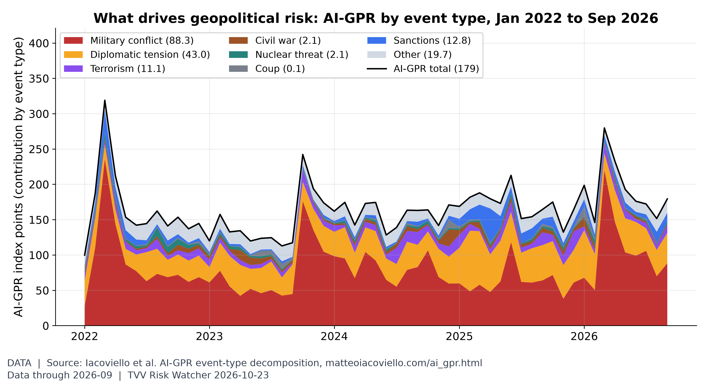
Geopolitical risk by event type. In September 2026 the AI-GPR index was 179 (2025 average 170); military conflict contributed 88 points (2025 average 63), diplomatic tension 43 and sanctions 13 (2025 average 15.3). Peak since 2022: 319 in March 2022. [Data; data as of 2026-09 (monthly; held: next update early Nov)] Source: matteoiacoviello.com data page
- ★ Hormuz: an official close to the IRGC Navy told Fars on Oct 23 that traffic of "violating" vessels had completely stopped after another tanker was destroyed overnight, while Trump said Iran was making up the reported hits to drive up oil prices. Neither claim is independently verified; Lloyd's List Intelligence said Oct 22 tankers still run at night in a US-protected lane near Oman despite 28 attacks on ships in October, the most since the war began. No new JMIC advisory since Update 106 (Oct 18). Newsquawk / Fars · AP via SBS · NBC / Lloyd's List · JMIC 106
- Iran-US: Tehran still promotes its plan to fully reopen the strait within a week if the US lifts its blockade of Iranian ports, which Trump rejected last month; a third US carrier is heading to the region, and an INSS researcher told AP a clear Netanyahu win in Israel's Oct 27 vote makes an attack on Iran almost guaranteed. AP via SBS
- ★ Ukraine's Air Force said Russia launched 176 drones, 92 of them jet-powered, overnight into Oct 23; 140 were downed, with hits at 19 locations. Strikes on energy sites cut power to more than 500,000 people and halted a DTEK thermal plant; eight civilians were killed and 67 wounded over the past day, many at a market in Lozova. Hromadske / Air Force · CNBC power cuts · Kyiv Independent casualties
- ★ Talks update: Putin told Russian television Moscow is ready to resume US-mediated contacts with Kyiv in November aimed at final peace agreements, not a short ceasefire; Zelensky told CNN late Oct 22 he is ready for a ceasefire but needs strong security guarantees. Polymarket priced a Trump-Putin-Zelensky meeting before 2027 at 9%. CNBC / Reuters · Polymarket three-way meeting
2. Major Terror / Security Incidents
- ★ Pakistan: militants attacked near the Gabd border crossing and in Gwadar city on Oct 22; ISPR said Oct 23 that security forces killed 10 militants, including a woman, and that one civilian died and several vehicles were damaged. Nukta / ISPR
- ★ Somalia: at least 20 government officers and soldiers, including the commander of the 7th Brigade's 54th Unit, were reportedly killed and nearly 30 wounded by suspected al-Shabaab roadside bombs on the Afgooye-Wanlaweyn road on Oct 22-23; the toll is not independently verified. Hornlife
- Nigeria: Islamic State West Africa Province claimed it killed an army base commander and at least seven soldiers in Yobe State, MEMRI reported Oct 22; the claim is not independently confirmed. MEMRI JTTM
- ★ France: Macron said Oct 22 the overall recommendation is no protests in the coming days, with non-union marches banned as far as possible, ahead of student and Gilets jaunes marches on Oct 24; the Louvre and Musée d'Orsay close that day and police deployment rises 20% over the 60,000 used on Oct 17. Asia Business Daily (BBC/AFP)
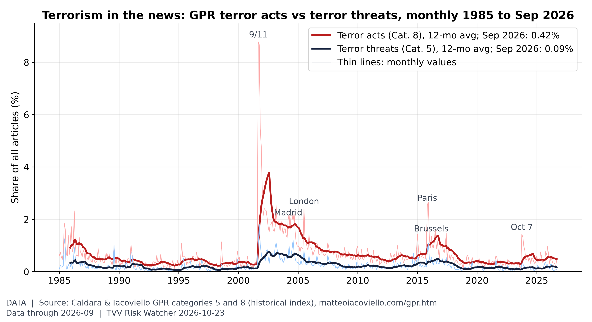
Terror acts vs terror threats. In September 2026, terror-act articles were 0.42% of all articles (2025 average 0.55%) and terror-threat articles 0.09% (2025 average 0.19%), far below the 9/11 peak of 8.8%. [Data; data as of 2026-09 (monthly; held: next update early Nov)] Source: matteoiacoviello.com data page
3. Earthquakes and Eruptions
- ★ Tibet: an M7.0 quake struck Baqen County, Nagqu, at 10:33 p.m. local time Oct 22 (14:33 UTC), killing 16 and injuring 76, local authorities said Oct 23; USGS issued an orange PAGER alert for economic losses. Xinhua · USGS event page
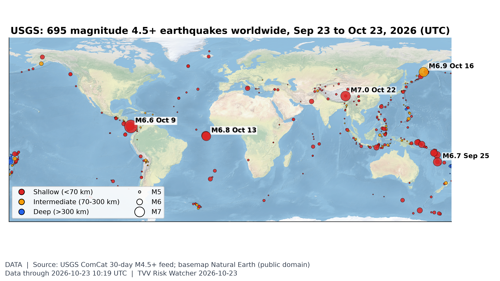
Where the earth shook this month. USGS logged 695 M4.5+ quakes in the 30 days to Oct 23, 14 of them M6+; the largest was M7.7 12 km WSW of Pitaloza Arriba, Panama on Oct 9 (UTC). [Data; data as of 2026-10-23 10:19 UTC (USGS 30-day M4.5+ feed, pulled ~6:58 AM ET Oct 23)] Source: earthquake.usgs.gov data page
4. Solar / Space Weather
- ★ SWPC at 0030 UTC Oct 23: the past day's highest Kp was 4, and no G1 storm is expected through Oct 25 (max Kp 3.67); no new Earth-directed CMEs were seen, with a slight chance of isolated M-class flares from Region 4560, which briefly showed a delta configuration. SWPC 3-day forecast · SWPC forecast discussion
- Magnetic field watch: measured data continue to show the north magnetic pole drifting and the field weakening, the background to excursion risk; nobody can predict the timing. Michael's own view: 2035 at the earliest, with critical earth changes along the way. NOAA NCEI World Magnetic Model
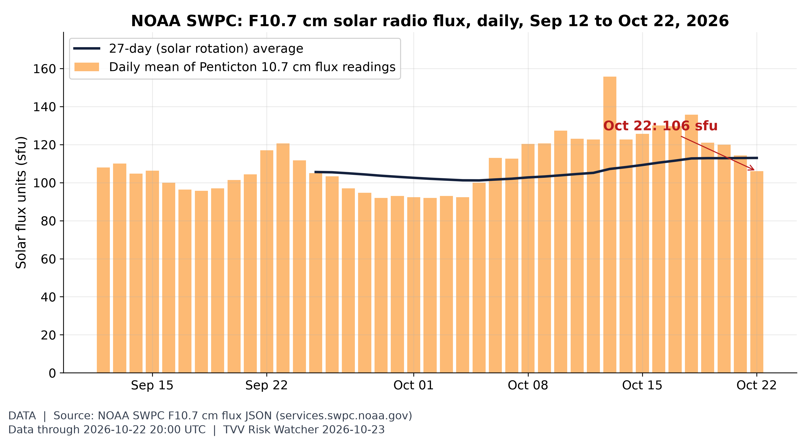
Solar activity proxy: F10.7 flux. The 10.7 cm solar radio flux, a standard proxy for solar activity and upper-atmosphere drag on satellites, was 106 sfu on Oct 22 (27-day average 113; window range 92-156). [Data; data as of 2026-10-22 20:00 UTC (latest Penticton reading)] Source: swpc.noaa.gov data page
5. Critical Infrastructure / Transportation Disruptions
- ★ Arizona floods: Kayenta Township declared a state of emergency on Oct 22 over flooding, power outages and impassable roads, and rescuers reached families stranded in Dennehotso after a dam failure; a likely tornado damaged Heber-Overgaard and the Red Cross opened three shelters. ABC15 live updates
- ★ Drought Monitor (Oct 22): drought eased across Texas, Oklahoma and parts of Arizona, but exceptional drought developed in southern Arkansas and northern Louisiana; Lake Powell held about 5.3 million acre-feet, 22% of capacity, on Oct 20. USDM narrative
- Natural gas: EIA reported a 77 Bcf injection for the week to Oct 16, at the low end of the 77-81 Bcf consensus, lifting storage to 3,644 Bcf, 152 Bcf below last year and 35 Bcf above the five-year average. Energy Edge / EIA
- Saudi bypass: Aramco's Amin Nasser told Al Arabiya the East-West pipeline, which avoids Hormuz, now carries 7 million barrels a day, up from 2 million, NBC reported. NBC News
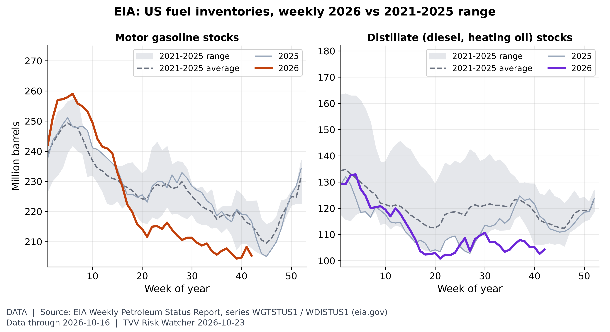
US fuel stocks. In the week to Oct 16, US gasoline stocks were 205.3M barrels (-4.7% vs the 2021-25 average) and distillate stocks 104.3M (-9.0%). [Data; data as of 2026-10-16 (weekly; EIA report of Oct 21; next due Wed Oct 28)] Source: eia.gov data page
6. Econo-Metrics
- ★ Gasoline: AAA's national regular average rose to $4.2926 a gallon on Oct 23 from $4.2701 a day earlier, versus $4.3271 a week ago and $3.0713 a year ago; diesel rose to $6.3172. AAA national average
- ★ Treasuries: the 10-year yield fell 17bp to 4.972% on Oct 22, its biggest one-day drop since October 23, 2026, as money fled AI stocks; by early Oct 23 it was 4.978%, the 2-year 4.665% and the 30-year 5.301%, before Friday's flash PMIs and the Oct 28 Fed decision. CNBC bonds
- ★ France: the 10-year OAT yield touched 5.145% on Oct 22, its highest since 2002, and moved above the US 10-year for the first time since 2013, Reuters reported; the gap over Germany reached about 1.78 points, the widest since 2011. Asia Business Daily (Reuters)
- ★ Oil: front-month Brent rose 1.1% to $114.49 by 6:51 a.m. ET Oct 23, a five-month high and up 3.3% on the week, while WTI rose 1.6% to $101.04. CNBC oil
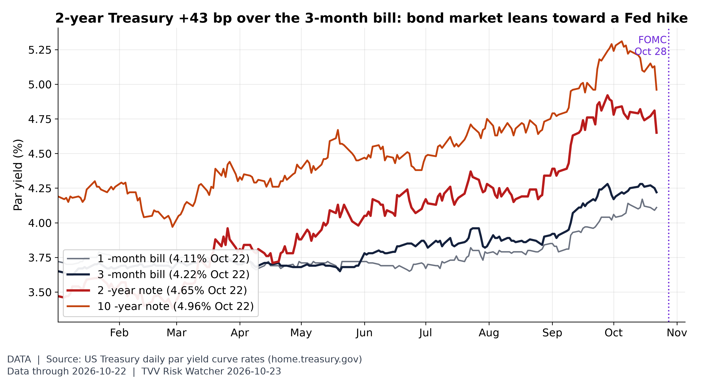
Bills vs notes before the FOMC. US Treasury par yields on Oct 22: 3-month 4.22%, 2-year 4.65%, 10-year 4.96%. The 2-year sits 43 bp above the 3-month bill (vs -18 bp on Jan 2, low -29 bp on Feb 27), i.e. markets price higher policy rates ahead; the FOMC decides Oct 28. [Data; data as of 2026-10-22 (daily par yield curve)] Source: home.treasury.gov data page
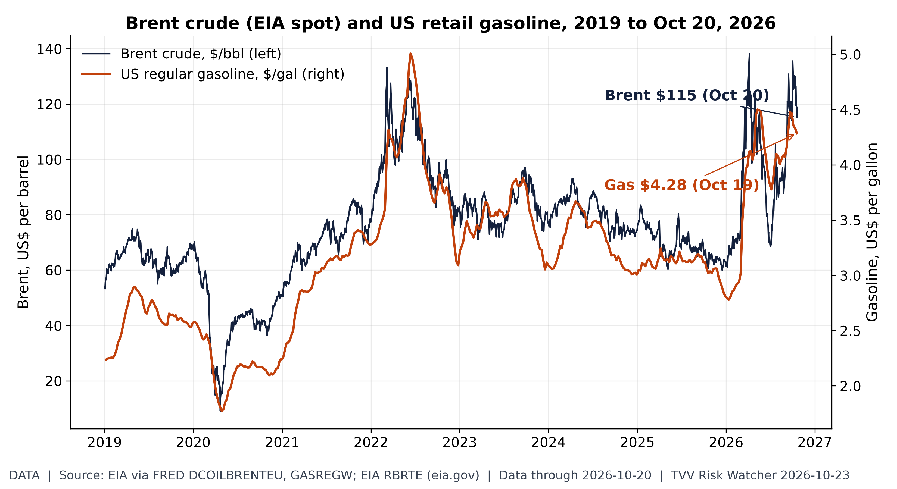
Oil shock at the pump. EIA Brent spot was $115.22 on Oct 20 (period peak $138 in April 2026); EIA's US regular gasoline average was $4.28 in the week of Oct 19. Both EIA series lag the market by about a week. [Data; data as of 2026-10-20 (Brent, latest EIA daily spot); 2026-10-19 (gasoline, latest EIA weekly)] Source: fred.stlouisfed.org data page
7. Epidemic / Bio-Metrics
- ★ Ebola: Switzerland told Reuters Oct 23 that Nigeria's patient, a Swiss diplomat's Ugandan-born wife, did not travel to Congo, contradicting Uganda; WHO is checking a possible link to Kenya's case via Entebbe airport. Africa CDC counts about 4,700 deaths in four countries. No new DRC SitRep since 159 (Oct 20). Reuters via Straits Times · Ebola tracker SitReps
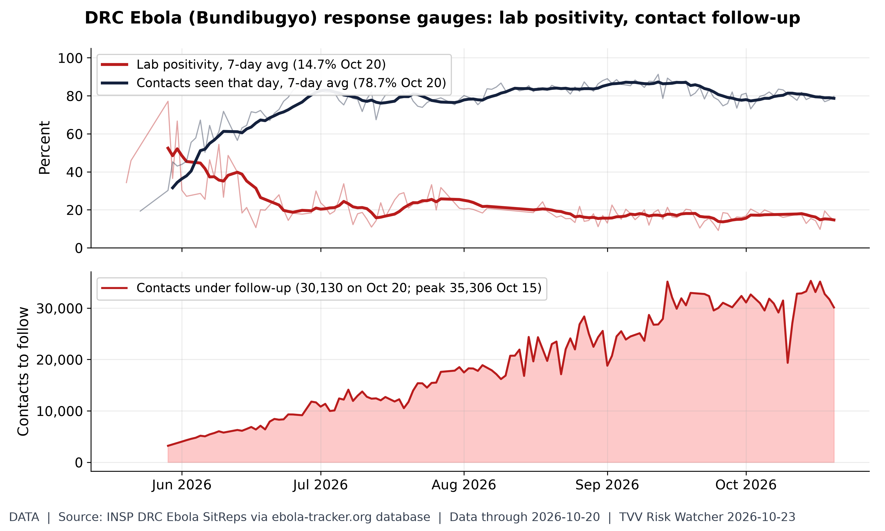
Is the Ebola response keeping up?. INSP SitRep 159 (situation Oct 20): 7-day average lab positivity 14.7% (peak 7-day 52.4% around May 29); 78.7% of listed contacts seen daily (7-day avg); 30,130 contacts under follow-up. Lower positivity and higher follow-up mean better control. SitRep 160 not yet posted at ~7:00 AM ET Oct 23; values as transcribed by ebola-tracker.org from INSP PDFs. [Data; data as of 2026-10-20 (SitRep 159)] Source: ebola-tracker.org data page
8. Gold and Silver
- ★ Kitco 7:48 a.m. ET Oct 23: gold $4,023.40 (flat), silver $53.80 (-1.22%), platinum $1,558 (-0.06%), palladium $1,032 (-0.39%); gold's range so far $3,986.10-$4,040.20. Kitco text quotes
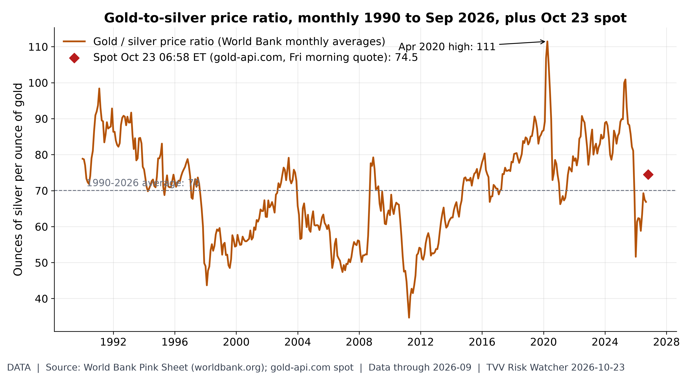
Gold-to-silver ratio. An ounce of gold buys 74.5 ounces of silver at the Friday-morning spot (gold $4,024, silver $54.04), vs 66.9 in September and a 1990-2026 average of 70. [Data; data as of 2026-09 (World Bank monthly, held); 2026-10-23 06:58 ET (gold-api.com spot, Fri morning quote)] Source: worldbank.org data page
9. Stock Averages and Nasdaq Major Movers
- ★ Thursday Oct 22 close: the S&P 500 fell 1.21% to 7,663.43, its worst day since July, and the Nasdaq 2.60% to 26,008.86, its steepest drop since early June, while the Dow edged up 11.89 points to 52,867.98; the Philadelphia chip index lost 6.7%. Reuters via Investing.com · AP index table
- ★ Breadth Oct 22: 340 of 501 S&P 500 tickers rose and the median stock gained 1.70% while SPY fell 1.18%; Allegion (ALLE) led at +11.02% and Moderna (MRNA) fell 17.57%. Quant500 S&P movers
- Gainers: XLAB +76.10%; STAK +75.00%; NCPL +41.40%; Losers: TTMX -54.74%; HVII -50.88%; FPSX -43.05%; all US Oct 22 StockSetups Oct 22 movers
- Gainers: BHVN +25.19%; ATNM +13.77%; BMI +13.50%; Losers: PMI -22.85%; FPS -21.44%; CRS -20.49%; NYSE Oct 22 StockSetups NYSE movers
- Losers: AVTX -39.23%; NVEC -34.02%; POM -32.89%; Nasdaq Oct 22 StockSetups Nasdaq movers
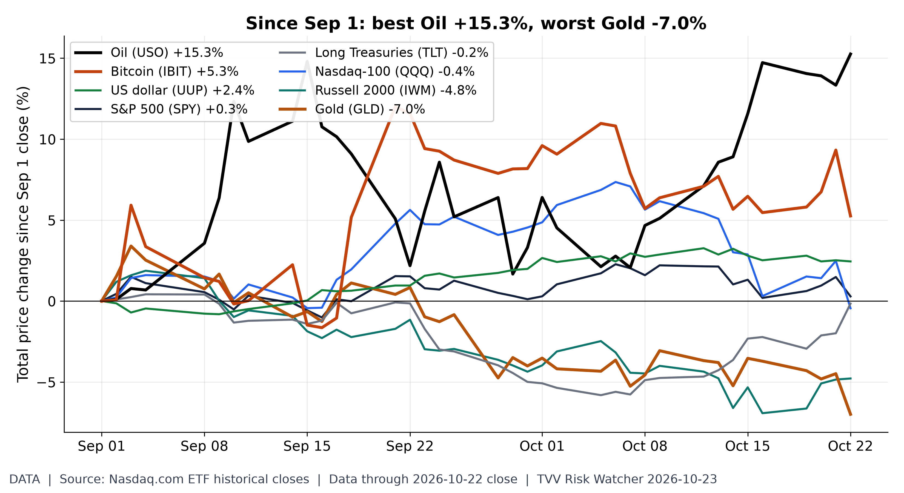
Cross-asset scoreboard since Sep 1. Price change from the Sep 1 close to Oct 22: Oil (USO) +15.3%; Bitcoin (IBIT) +5.3%; US dollar (UUP) +2.4%; S&P 500 (SPY) +0.3%; Long Treasuries (TLT) -0.2%; Nasdaq-100 (QQQ) -0.4%; Russell 2000 (IWM) -4.8%; Gold (GLD) -7.0%. ETF closes (Nasdaq.com), price only, no dividends. [Data; data as of 2026-10-22 close] Source: nasdaq.com data page
10. Polymarket and Kalshi Sentiment Highlights
- ★ US-Iran: Polymarket's ceasefire-holds-through-Oct 31 contract rose 4 points to 77.5% on Oct 23, with Nov 30 at 37.5% and Oct 24 at 93.5%. Polymarket US-Iran
- ★ Oil: Polymarket's October WTI book priced a $105 high at 54% on Oct 23, up 13 points in a day, and $110 at 24%, while a drop to $95 fell 13 points to 40%. Polymarket WTI October
- ★ Israel's next PM: four days before the vote, Polymarket priced Eisenkot at 49.05% on Oct 23, Netanyahu 29.5% and Bennett 15.5%; any coalition winning a majority traded at 14%. Polymarket Israel PM · Polymarket Israel majority
- ★ Ukraine ceasefire: Polymarket's Dec 31 contract edged up to 13.5% on Oct 23 and Oct 31 slipped to 0.65%, while Mar 31, 2027 traded at 26.5% and Dec 31, 2027 at 52.5%. Polymarket Ukraine ceasefire
- ★ Oct FOMC: Polymarket priced a hold on Oct 28 at 93.5% and a 25bp hike at 6.5% on Oct 23; the thin dissent market had two dissents as the top bucket at 28%. Polymarket Fed decision
- Little changed: a Saudi-Houthi ceasefire by Dec 31 (30.5% on Polymarket) and Hormuz traffic back to normal by Dec 31 at 11.5%, Polymarket showed Oct 23. Polymarket Saudi-Houthi ceasefire · Polymarket Hormuz normal
- Midterms: Polymarket priced Democrats at 92.5% to win the House, unchanged, and 67.5% for the Senate on Oct 23; a US recession by end-2026 held at 7.5%. Polymarket House 2026 · Polymarket Senate 2026 · Polymarket US recession
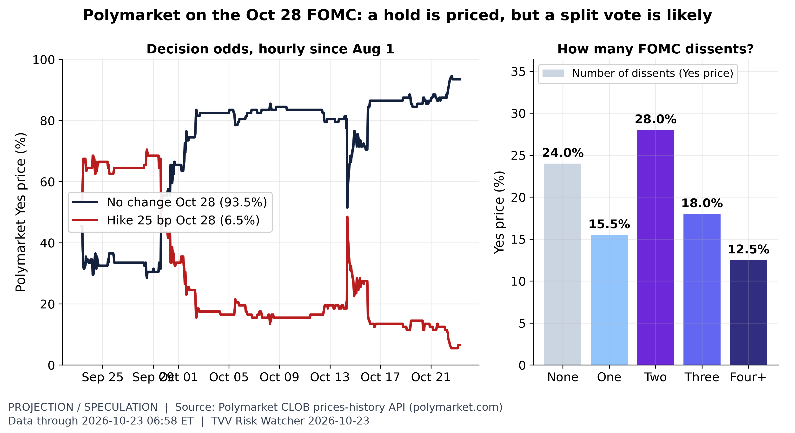
FOMC: hold priced, dissents expected. Polymarket ~06:58 ET Oct 23: no change Oct 28 93.5%, 25 bp hike 6.5%. Dissent count: none 24.0%, one 15.5%, two 28.0%, three 18.0%, four+ 12.5% (100 minus the none price implies about 76% odds of at least one dissent; the dissent market is thin, ~$33K volume, and its prices need not sum to 100). Crowd prices, not Fed guidance. [Projection/Speculation; data as of 2026-10-23 06:58 ET (hourly)] Source: polymarket.com data page
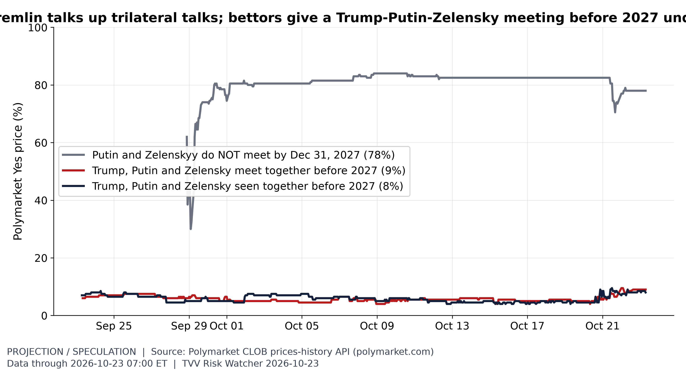
Summit talk vs summit odds. Polymarket ~07:00 ET Oct 23: Trump, Putin and Zelensky meet together before 2027 9%; seen together before 2027 8%; Putin and Zelenskyy do not meet at all by end-2027 78%. The meet-before-2027 price ranged 4.0-9.5% in October despite Kremlin talk of trilateral talks in mid-November. Thin markets ($60K-$108K volume); crowd prices, not forecasts. [Projection/Speculation; data as of 2026-10-23 07:00 ET (hourly)] Source: polymarket.com data page
Graph Sources
• Geopolitical risk by event type: https://www.matteoiacoviello.com/ai_gpr.html
• Geopolitical risk by event type (data): https://www.matteoiacoviello.com/ai_gpr_files/ai_gpr_eventtype_monthly.csv
• Terror acts vs terror threats: https://www.matteoiacoviello.com/gpr.htm
• Terror acts vs terror threats (data): https://www.matteoiacoviello.com/gpr_files/data_gpr_export.xls
• Terror acts vs terror threats (data): https://www.matteoiacoviello.com/gpr_files/GPR_PAPER.pdf
• Where the earth shook this month: https://earthquake.usgs.gov/earthquakes/map/
• Where the earth shook this month (data): https://earthquake.usgs.gov/earthquakes/feed/v1.0/summary/4.5_month.csv
• Where the earth shook this month (data): https://www.naturalearthdata.com/downloads/50m-raster-data/50m-shaded-relief/
• Solar activity proxy: F10.7 flux: https://www.swpc.noaa.gov/phenomena/f107-cm-radio-emissions
• Solar activity proxy: F10.7 flux (data): https://services.swpc.noaa.gov/json/f107_cm_flux.json
• US fuel stocks: https://www.eia.gov/dnav/pet/hist/LeafHandler.ashx?n=PET&s=WGTSTUS1&f=W
• US fuel stocks (data): https://www.eia.gov/dnav/pet/hist/LeafHandler.ashx?n=PET&s=WDISTUS1&f=W
• Bills vs notes before the FOMC: https://home.treasury.gov/resource-center/data-chart-center/interest-rates/TextView?type=daily_treasury_yield_curve&field_tdr_date_value=2026
• Oil shock at the pump: https://fred.stlouisfed.org/series/DCOILBRENTEU
• Oil shock at the pump (data): https://fred.stlouisfed.org/series/GASREGW
• Oil shock at the pump (data): https://www.eia.gov/dnav/pet/hist/LeafHandler.ashx?n=PET&s=RBRTE&f=D
• Is the Ebola response keeping up?: https://ebola-tracker.org/en/database/
• Is the Ebola response keeping up? (data): https://ebola-tracker.org/data/base-ebola-rdc.csv
• Gold-to-silver ratio: https://www.worldbank.org/en/research/commodity-markets
• Gold-to-silver ratio (data): https://api.gold-api.com/price/XAU
• Gold-to-silver ratio (data): https://api.gold-api.com/price/XAG
• Cross-asset scoreboard since Sep 1: https://www.nasdaq.com/market-activity/etf/spy/historical
• Cross-asset scoreboard since Sep 1 (data): https://www.nasdaq.com/market-activity/etf/uso/historical
• Cross-asset scoreboard since Sep 1 (data): https://www.nasdaq.com/market-activity/etf/ibit/historical
• FOMC: hold priced, dissents expected: https://polymarket.com/event/fed-decision-in-october-20260617190323537
• FOMC: hold priced, dissents expected (data): https://polymarket.com/event/how-many-dissent-at-the-october-fed-meeting
• Summit talk vs summit odds: https://polymarket.com/event/trump-putin-and-zelensky-meet-together-before-2027
• Summit talk vs summit odds (data): https://polymarket.com/event/trump-putin-and-zelensky-seen-together-before-2027
• Summit talk vs summit odds (data): https://polymarket.com/event/where-will-putin-and-zelenskyy-meet-next
• AI megacaps split: https://www.nasdaq.com/market-activity/stocks/nvda/historical
• AI megacaps split (data): https://www.nasdaq.com/market-activity/etf/qqq/historical
11. Tech-Metrics
- ★ AI spending bill: Meta fell 7% on Oct 22 after reporting negative free cash flow of $2.12 billion, its first cash burn in more than a decade, and planning non-voting Class C shares to fund AI; its credit default swaps hit a record and it raised the low end of its spending forecast to $135 billion. Reuters via Investing.com
- ★ Chips and neoclouds: Lam Research fell 12% and CoreWeave 10% on Oct 22, and Nebius lost 7% after a $3.5 billion Citigroup credit line; BofA said CoreWeave may need to raise $20 billion for customer commitments. The chip index is now more than 26% below its June 22 record. Reuters via Investing.com · Reuters close
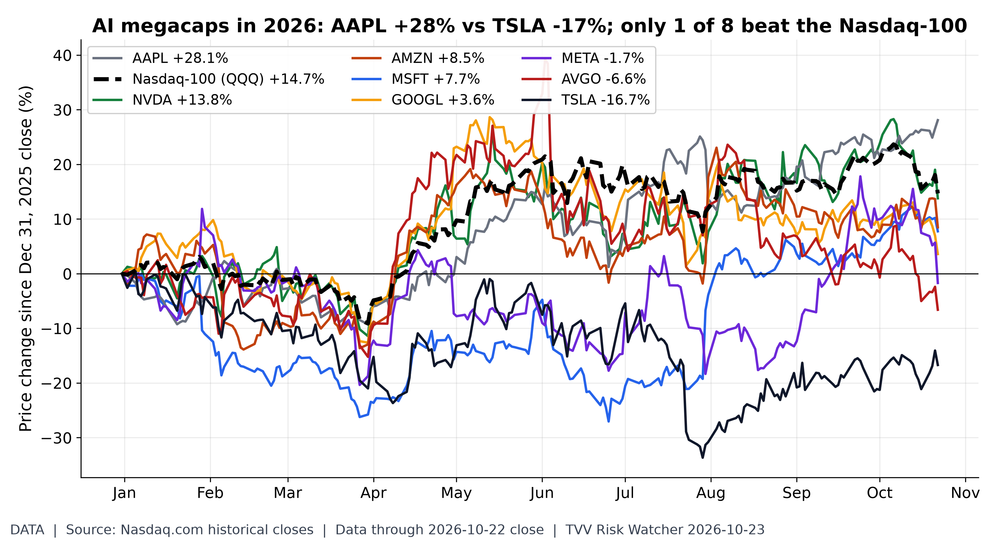
AI megacaps split. Price change Dec 31, 2025 to Oct 22 close: AAPL +28.1%; NVDA +13.8%; AMZN +8.5%; MSFT +7.7%; GOOGL +3.6%; META -1.7%; AVGO -6.6%; TSLA -16.7%; Nasdaq-100 (QQQ) +14.7%. 1 of the 8 beat the index. Nasdaq.com closes, price only. [Data; data as of 2026-10-22 close] Source: nasdaq.com data page
TECHVESTVENTURES ACTION-ALERT — October 23, 2026
EDITOR — Michael Hentschel
Most news events require or spawn no action or reaction, some (but not many) are or become warnings. We draw attention to substantial lifestyle risks and market risks in particular, some created by Mid-Term Vote anxieties, Middle East tensions, vast over-indebtedness globally, and other events we track. Longer term but capable of causing sudden power surges as serious as the Carrington Event. Climate instability occasioned by long-term cyclical solar electro-magnetic flares, is becoming much more prominent and even more likely. New AI predictive analytics and pattern seekers are pointed in some of these directions, and we monitor imminent likelihood. Some readers might hedge and others might see opportunity. The above is not investment advice.